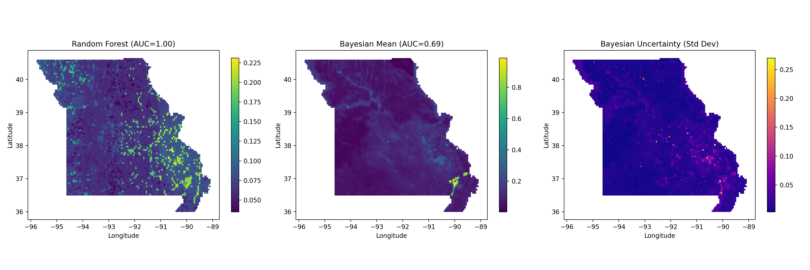
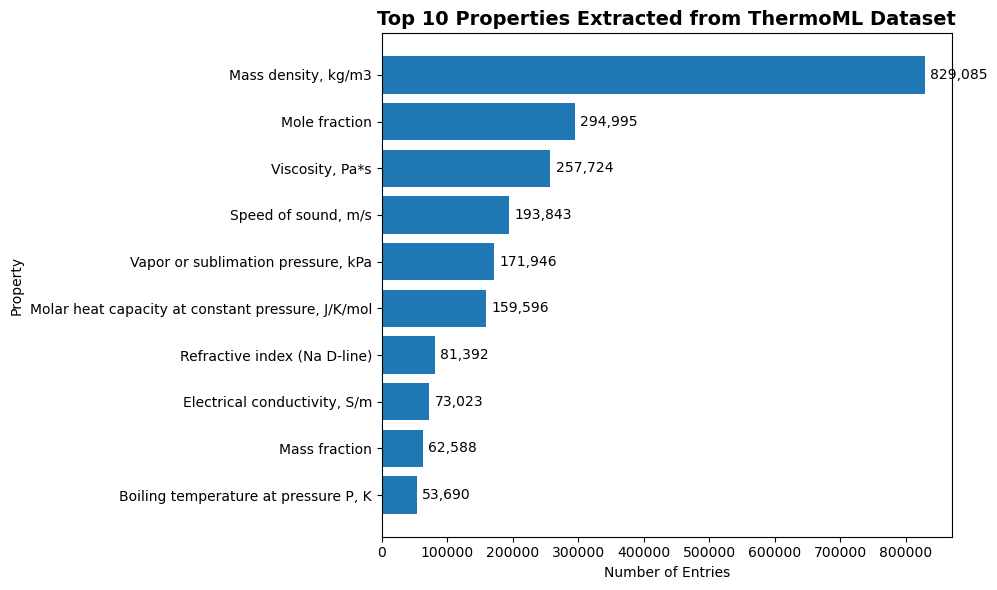
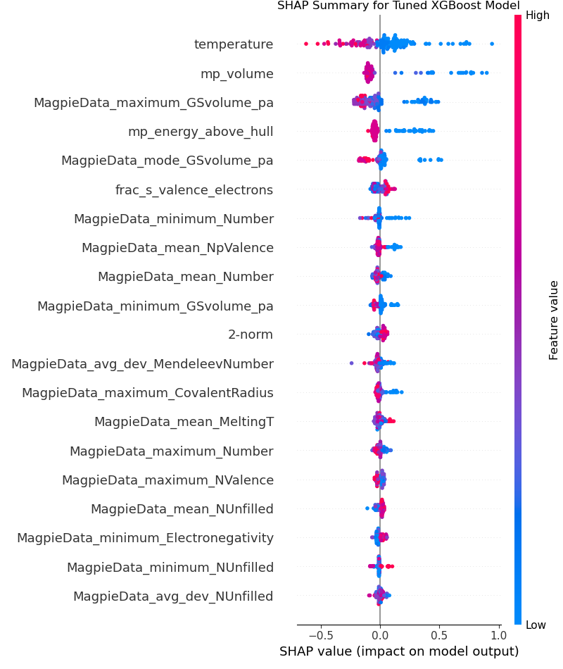

📁 Featured Projects
Ore Exploration
Built a reproducible geoscience ML pipeline integrating geology, geophysics, and geochemistry to map critical mineral prospectivity. Combined Random Forests and Bayesian models with spatial cross-validation to identify top-ranked exploration targets, deployed as heatmaps and an interactive Streamlit app.
🔗 GitHub Repo · 📄 PDF Summary (in work) 🚀 Interactive Dashboard
ThermoML Parser
Parsed 1,200+ XML files to extract structured thermophysical data for ML-ready analysis. Designed CLI tools and uncertainty handling using modern Python.
🔗 GitHub Repo · 📄 PDF Summary
Thermal Conductivity ML Model
Used matminer to featurize materials from multiple datasets. Trained ensemble models achieving R² > 0.85 with SHAP-based interpretability. Now experimenting with deep learning + Docker deployment on a dedicated dev branch.
🔗 GitHub Repo 🔗 Dev Branch Repo ·
📚 Selected Publications
I’ve co-authored peer-reviewed publications in Scientific Reports, ASHRAE Journal, Journal of Applied Microbiology, and SAMPE Conference Proceedings. These span aerosol modeling, materials testing, and surface engineering.
👩🔬 About Me
I'm a materials scientist and data engineer with a background in sustainable coatings, advanced polymers, and scientific tooling. I specialize in transforming messy scientific data into clean, machine-learnable formats and building interpretable models to drive environmental impact.
Tools I love: Python · Pandas · Matminer · Streamlit · XML · ThermoML · Git · LaTeX